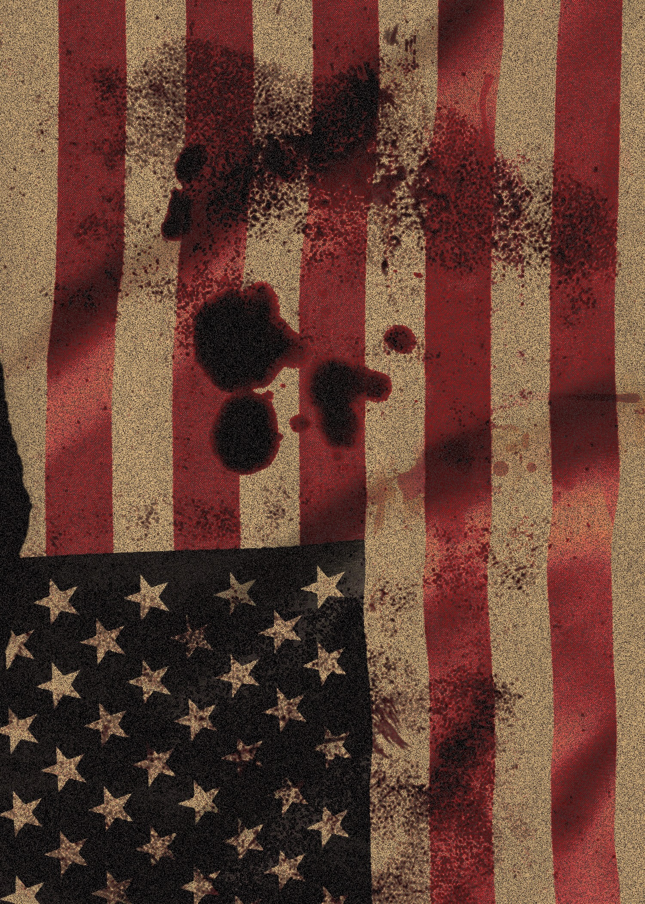
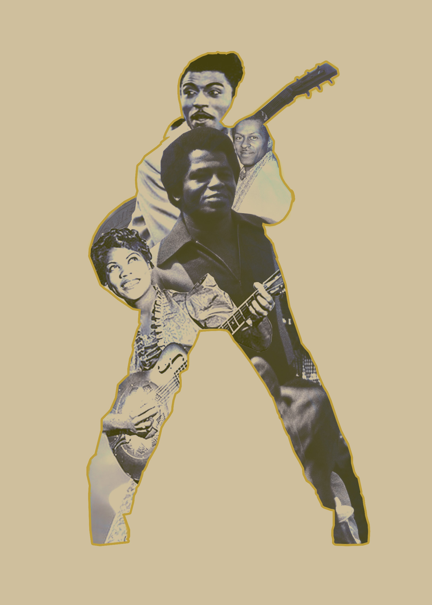
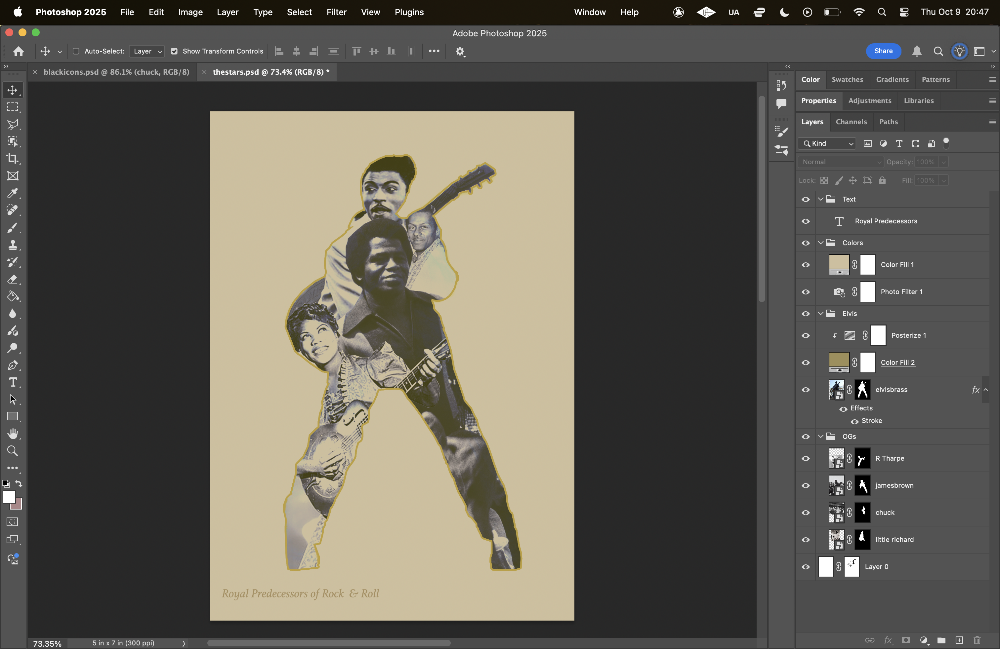

My first image is a piece of social commentary on the state of our country and the foundations on which it was built. The collage of the American flag depicts how the America we once knew (or have been indoctrinated into believing) has become distorted. The blood spilled in the name of conquest, previously hidden, now permeates the very fabric of our nation. The image is oriented upside down to reference the naval distress signal SOS.
To edit this image, I used blood stain patterns applied with blend modes, curves adjustment layers, channel mixer layers, and multiple overlays to add depth and drama. Finally, I applied a sepia photo filter with the dissolve blend mode for grainy texture. All photos and textures are sourced from Unsplash, Pexels TextureLabs, and the Creative Commons database.

My second image, 'Royal Predecessors,' highlights Black pioneers of the music world who influenced Elvis Presley. Within the Elvis outline, you’ll see James Brown, Chuck Berry, Little Richard, and Sister Rosetta Tharpe. These individuals contributed significantly to his musical success while often receiving no credit due to systemic racism. The screenshot of layers shows my editing process, with text removed for clarity.

